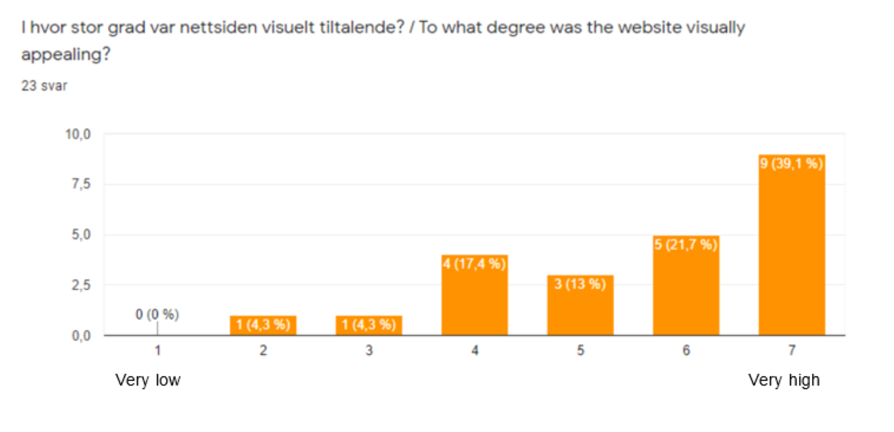
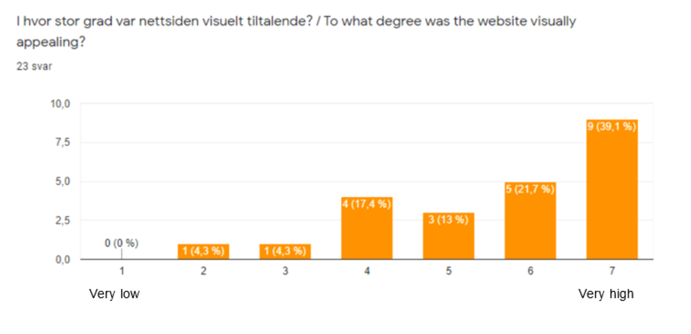
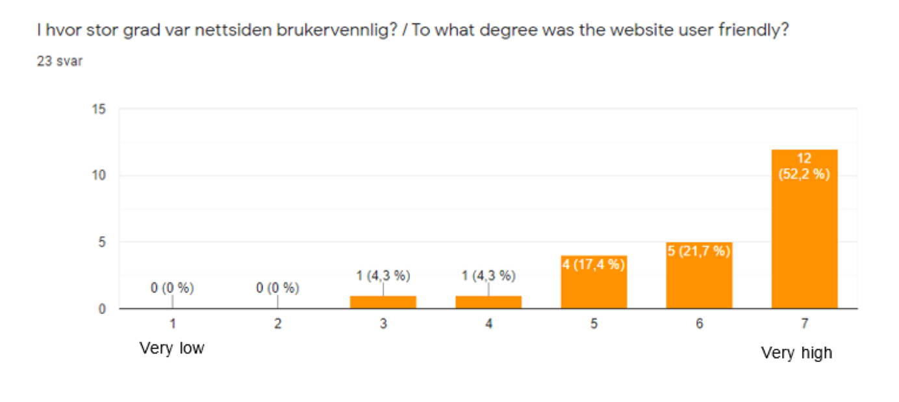

Administrative Details:
Imaginary Client: Barack Obama (44th President of the United States of America)
He is the founder and the current President of O'Burger.
Testing Document:
We decided to make a Google Forms document for our website testing, considering we're living amid a pandemic, where we want to minimize social contact as much as possible. In short, the questions will ask about:
- Browser and device
- First impressions
- Website navigation
- Visual appeal
- User-friendliness
- Immediate improvements (voluntary to answer)
Link to Google Form: Here
Testing Audience:
As briefly mentioned above, our current situation has made it difficult to perform live testing. Therefore, we decided to distribute the link to the website along with link to the Google Form through social media posts and direct messages. Naturally, by using this method, some of our friends, family or colleagues did become testers - they may or may not have some bias. Despite these problems, we believe our testers more or less fitted our intended audience.
The result:
Testing Platforms:
As mentioned in the "Testing Document"-section, we asked our testers about which browser and device they used for testing. As you can see, most of our testers used Google Chrome as browser and a computer/PC as a device.
The result:

Feedback Summary:
It is worth mentioning that the testers were shown quite a different website than the one we finally delivered, because we chose to take in some of the testers' criticism in order to improve our website.
Design:In our Google Forms, we asked two direct questions regarding our design - first impression and degree of visual appeal.
As you can see in the bar charts below, most of our testers was satisified with our design.
 
Navigation:
In the bar chart below, it is apparent, that the testers found the website easy to navigate. The importance of easy-navigation was always in the back of our minds, when creating the website.
Content:
Regarding the content of the website: We asked the testers about what they like the most/least about our website, and many seemed to enjoy the concept of our website. Our homemade "O'Burger"-logo also received alot of positive feedback; the fact that several of the testers noticed and left positive comments on it, was a pleasant surprise.
User-friendliness:When asked, "to what degree was the website user friendly?", about 91,3 % of the testers choose high to very high (5-7).
Response to Feedback:
As mentioned in the "Feedback Summary"-section, many of testers decided to answer the questions regarding if they had any suggestions for improvement. We found their criticism extremely helpful, and we decided to follow through with some of the desired changes.
Most of them wanted to see an interactive map on the restaurant page. We decided to implement it, but since the implementation uses a Google Maps API, this functionality was not a top priority (we wanted to focus on other functionalities that we made from scratch). This resulted into find_restaurant.js not being optimally.
A common problem was that on low-width devices, such as phones, the navbar buttons overlapped ("restaurants" read "resta"). In order to improve responsive design, we decided to implement a dropdown-menu that appears when the device width is small enough. On lower resolutions, the navbar now consists of only one button, "menu", which when clicked, displays a dropdown-menu. The dropdown-menu contains all the links as navbar would display, including the home page, but displayed as text and not as a logo. The user can scroll inside the menu (it doesn't cover the entire page).